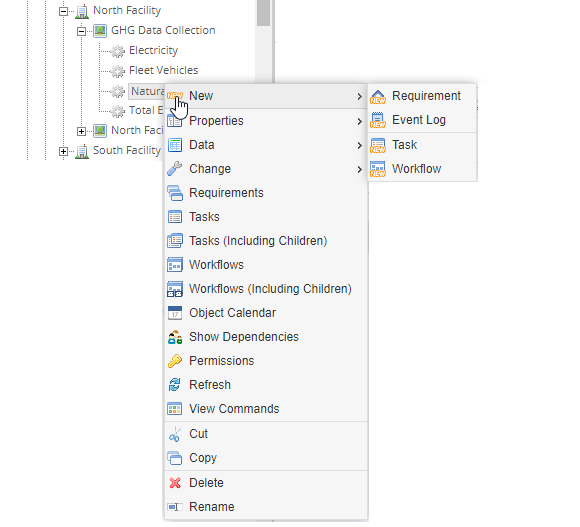
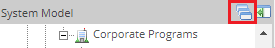
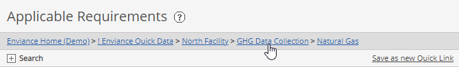

Various actions that you may need to perform are available from right-click context menus. The menu options vary according to the type of object selected.
To see menu options for a System Model object, right click on the object name in the tree.
The context menu shows the actions that are available for this object. The options vary depending on the type of object selected and on the permissions you have.

Those functions to which you do not have permission are grayed out (disabled).
To select an action from the menu, click on the menu option.
Once you choose a menu option from the right-click menu, that menu option becomes the default action for subsequent objects you select (unless that action is not available for the object).
On the System Model page, default menu options are available for both the System Model tree objects (on the left) and the requirements and objects displayed on the right.
From the System Model pane, the default action is View Applicable Requirements view. When you select an object in the requirements tree, the associated requirements are displayed on the right.
The active menu option is indicated by an icon in the title bar of the System Model frame. A "tool tip" appears when you hover the cursor over the icon.

The default action is the last action performed.
When Data > Enter/Edit is selected from the right-click pop-up menu for an object, the data entry screen is displayed. If you select another object, the data entry screen for the new object is displayed. Data entry mode then remains the display mode until you choose another menu option. If the default option is not available for an object, the object properties are displayed.
The status bar also contains a "breadcrumb" link that shows the path of the current object in the System Model hierarchy.
Each part of the path is hyperlinked and can be used for navigation. Click any part to navigate to that object in the tree.
